Capital Quest Corporation, Ltd.先週のジャカルタ総合指数（JCI／IHSG）は 6,127.38 で取引を終え、前金曜比 −0.56% と小幅に下落した。イドゥル・アドハ（犠牲祭）に伴い 5月27日（水）が国民の祝日、28日（木）が合同休暇となったため、実質の取引は月・火・金の3営業日にとどまった。週初の月曜は +0.30% と堅調だったものの、火曜に −1.23% と崩れ、休場明けの金曜は −0.05% でほぼ横ばい。指数を押し下げたのは時価総額の大きい大型銀行（BBCA −3.4%、BBRI −3.3%）と自動車のアストラ（ASII −7.4%）で、外国人の売り越しが重荷となった。
一方で、見出しの指数とは裏腹に市場全体の時価総額は +0.88% 増のRp10,729兆（約¥96兆）へ拡大した。これは Prajogo Pangestu 氏が支配する Barito 系（BREN +34.7%、BRPT +20.9%） など、発行済み株式の大半をオーナーが保有し市場に出回る株（浮動株）が極端に薄い大型株が急騰したため。浮動株で重みづけする指数にはあまり効かない一方、発行済み全株で測る時価総額だけが膨らむ――"どの物差しで測るか"で市場の評価が割れた一週間といえる。
※ 構成銘柄シートから時価総額加重で直接算出（前金曜終値→当金曜終値、配当込トータルリターン）。これは発行済み全株式ベースのフルmcap加重で、浮動株調整を行う公表指数（JCI −0.56%）とは性質が異なる。とくに公益事業 +25.0% は BREN（Barito Renewables）1銘柄、素材 +3.49% は BRPT/AMMN の急騰に強く依存しており、浮動株の薄い少数銘柄の振れがそのまま現れている点に留意。TRがNULLの小型株（91/913）は加重計算から除外。
上位は Prajogo Pangestu 関連／資源・エネルギーに集中した。再生可能エネルギーの BREN、石化・エネルギー持株の BRPT、石炭の CUAN、鉱山サービスの PTRO と、オーナー支配色が強く浮動株の薄い銘柄群が揃って二桁高となっている。もっとも同じ Prajogo 系でも石油化学の TPIA は −10.5% と逆行し、外国人の売り越し最多銘柄（TPIA・BBCA・AMMN）に名を連ねた。複合体全体が一律に買われたわけではない点は注意したい。下落側は外国人売りを浴びた大型バリュー（銀行 BBCA／BBRI、複合のアストラ ASII）とニッケルの INCO、小売 AMRT が中心で、指数の方向（−0.56%）は実質的にこの大型株群が決めた。
※ リターンは LSEG TR.TotalReturn1Wk（前金曜終値→当金曜終値、配当込）。掲載は流動性（出来高>0）・時価総額の大きい銘柄を中心に抽出。Top Losers は値下がり率の絶対値だけでなく、指数寄与の大きい大型株を優先して掲載。AMRT の急落は配当権利落ち等の特殊要因の可能性があり継続確認中。
対ドルのルピアは 5/29 終値で USD/IDR 17,824（前日比 −0.02%。木曜 5/28 には薄商いのなか一時 約17,900 と過去最安値を更新）。月間で約 −3%、年初来では約 −6.6% と、インドルピー・フィリピンペソと並ぶアジア最弱クラスの下落。中央銀行（Bank Indonesia）は前週 5/19–20 の理事会（RDG）で +50bp 利上げし 5.25%（約2年ぶり、'25年11月以来の据置を解除）と、市場予想の中央値（+25bp）を上回るサプライズでルピア防衛に動いた。通貨防衛と景気・資金流出のあいだで難しい舵取りが続く。通貨安は外国人投資家のインドネシア資産離れと表裏の関係にある。
先週の外国人投資家は全市場ベースで 約Rp12.43兆の売り越し。最も売られたのは石油化学の TPIA、最大手銀行の BBCA、銅・金鉱山の AMMN だった。年初来の累積流出は大型バリュー、とりわけ銀行株に集中しており、指数が時価総額の半分近くを銀行で占める構造（推計）とあいまって、外資の動きが指数の方向を左右しやすい。日次平均の売買代金は Rp28.38兆（前週比 +30.4%、約¥2,542億）と、3営業日ながら活況だった。
再生可能エネルギーの BREN（+34.7%）を筆頭に、BRPT（+20.9%）、CUAN（+22.3%）など Prajogo Pangestu 関連の資源・エネルギー銘柄が軒並み二桁高。これらは浮動株が薄く指数（浮動株調整）への寄与は限られる一方、発行済み全株で測る市場時価総額を押し上げ、IHSG が −0.56% 下げたにもかかわらず BEI の時価総額は +0.88% 増の Rp10,729兆（約¥96兆）へ拡大した。「指数が下げた＝市場全体が縮んだ」とは限らない、という構図が鮮明に出た週。
今週のインドネシアは、見出しの指数（IHSG −0.56%）と「市場全体の時価総額（+0.88%）」が逆を向いた珍しい週だった。からくりは "浮動株" にある。指数は実際に市場で売買できる株（浮動株）で重みづけするため、外国人に売られた大型銀行の比重が大きく、その下げが効く。
一方、時価総額は発行済みの全株でカウントする。だから Prajogo 氏が大半を握り市場に出回る株が少ない Barito 系（BREN など）が急騰すると、指数にはあまり効かないのに時価総額だけが膨らむ。"市場が上がった／下がった"は、どの物差しで見るかで答えが変わる――そんな教科書のような一週間だった。次に「インドネシア株が上がった」という見出しを見たら、それが指数の話か、時価総額の話かを一度立ち止まって確かめたい。
データ基準：JCI（IHSG）の週次は前金曜（5/22）終値 6,162.04 → 当金曜（5/29）終値 6,127.38 ＝ −0.56%（一次照合済。Excel の A基準 −0.97% は「月曜始値→金曜終値」で、月曜が前金曜終値からギャップアップして寄ったため別物）。日次経路は対象週内（実質3営業日：5/25 月・5/26 火・5/29 金。5/27 水＝イドゥル・アドハ、5/28 木＝合同休暇で休場）。個別銘柄・セクターのリターンは LSEG TR.TotalReturn1Wk（前金曜終値→当金曜終値、配当込）。セクターは構成銘柄から時価総額加重で直接算出（発行済み全株ベース・浮動株調整なし）。TR が NULL の小型株（91/913）は加重計算から除外。公表指数は浮動株調整のため本表のフルmcap加重値とは乖離する。¥換算は 1 JPY≈111.65 IDR（5/25 時点）、USD/IDR=17,824（5/29 終値、Trading Economics／Bloomberg。木曜 5/28 に薄商いで一時 約17,900 の過去最安値）。出所：LSEG Workspace、Bank Indonesia（bi.go.id：BI-Rate／RDG 5/19–20）、Kontan／Kompas／Katadata、Trading Economics、Bloomberg、IDNFinancials、IDX。本資料は情報提供のみを目的とし、特定の金融商品の売買を推奨するものではありません。